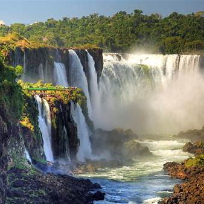
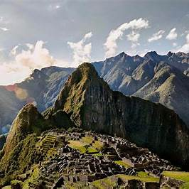
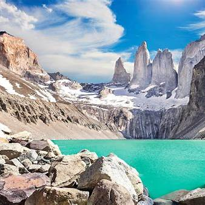
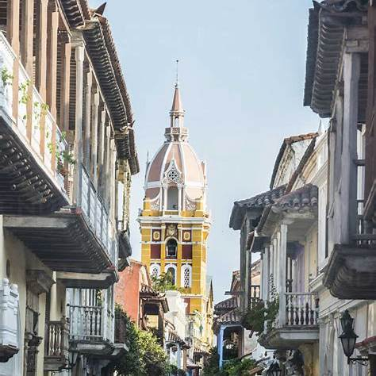
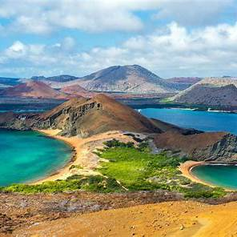
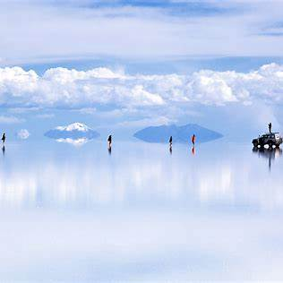
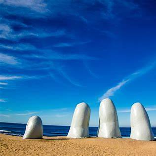
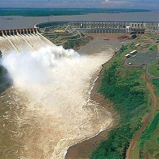
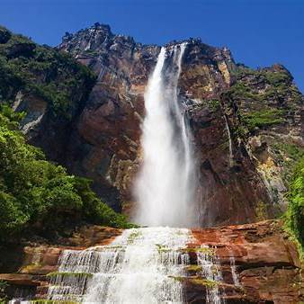

South America Explorer
Browse all featured countries in South America and open destination pages with real attractions.









Browse all featured countries in South America and open destination pages with real attractions.








